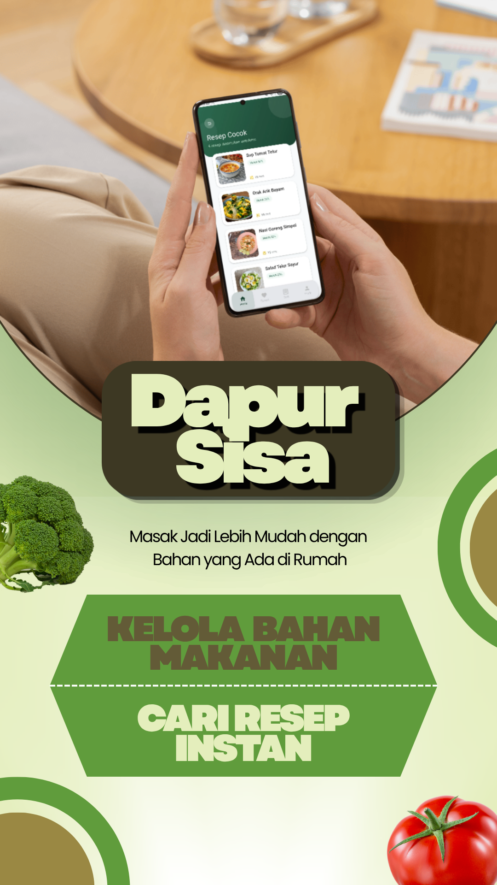
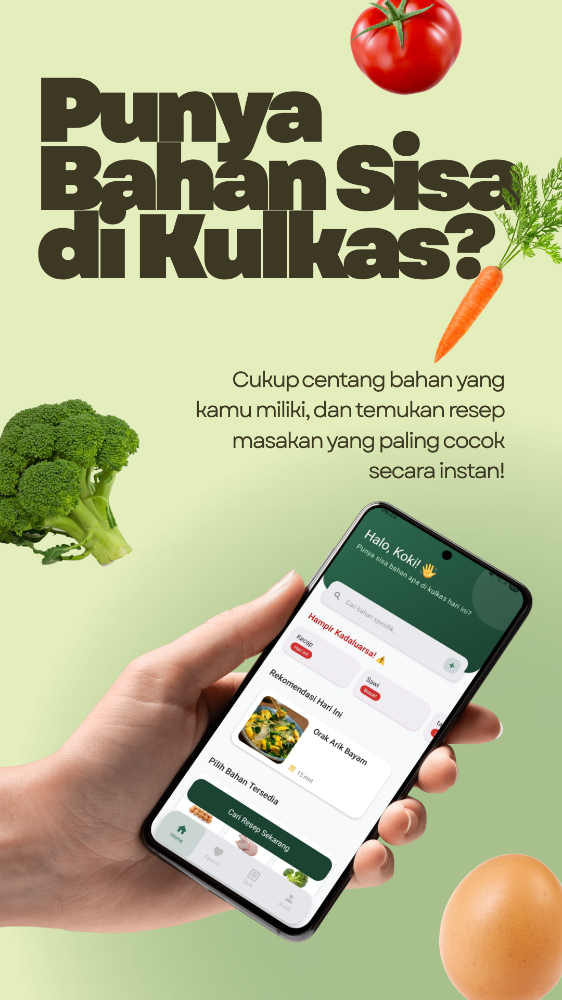
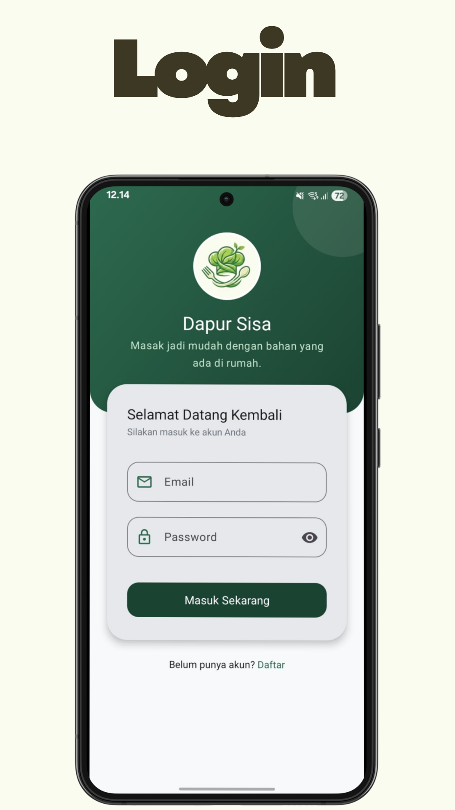
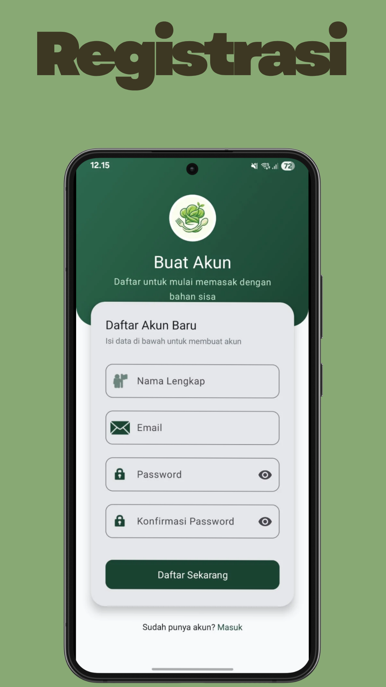
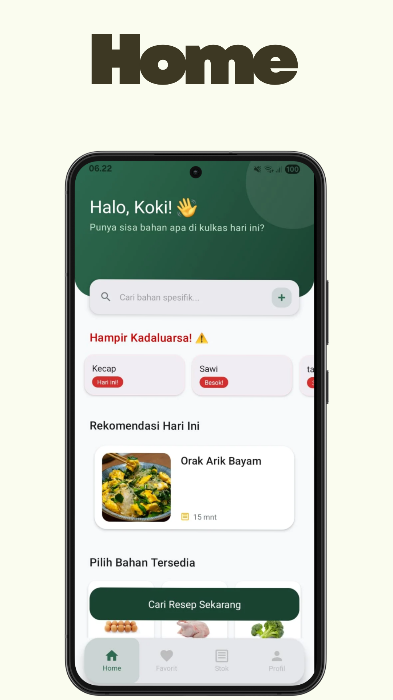
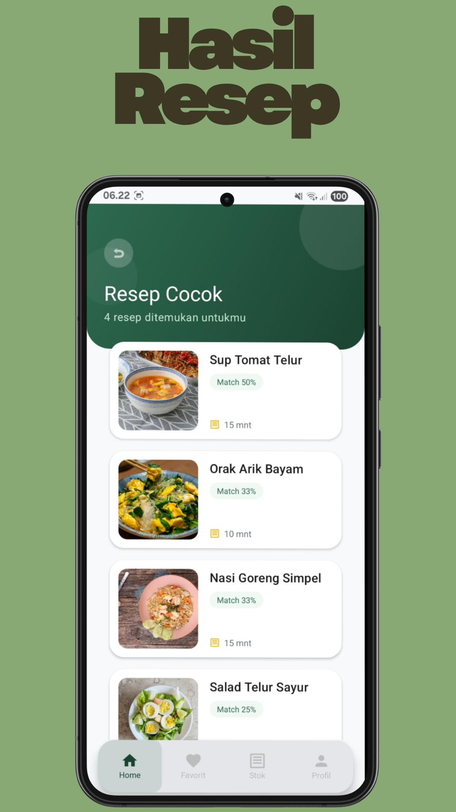
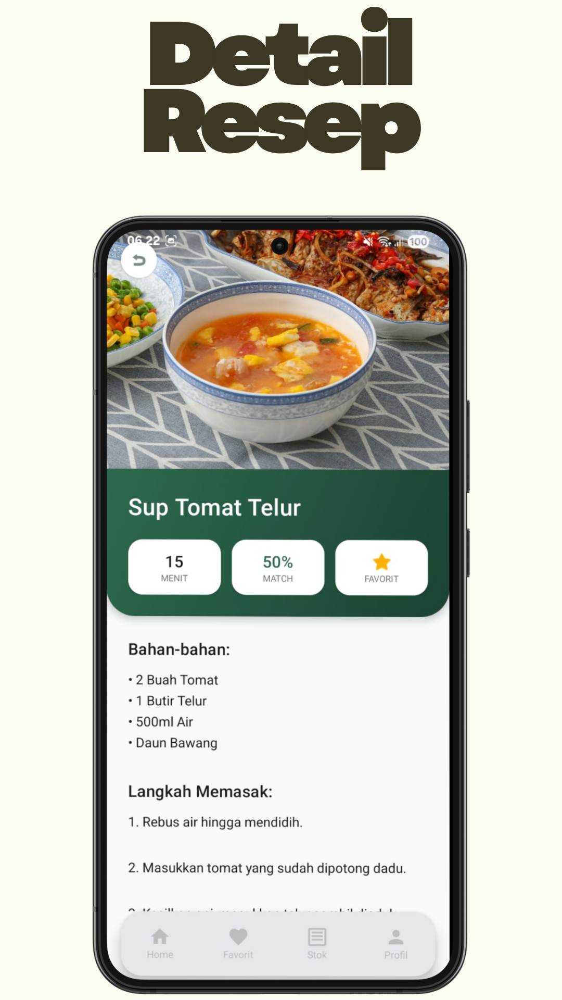
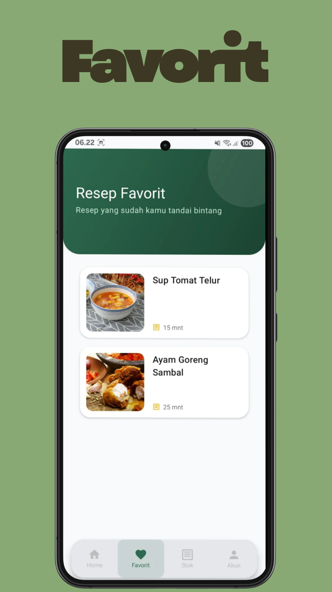
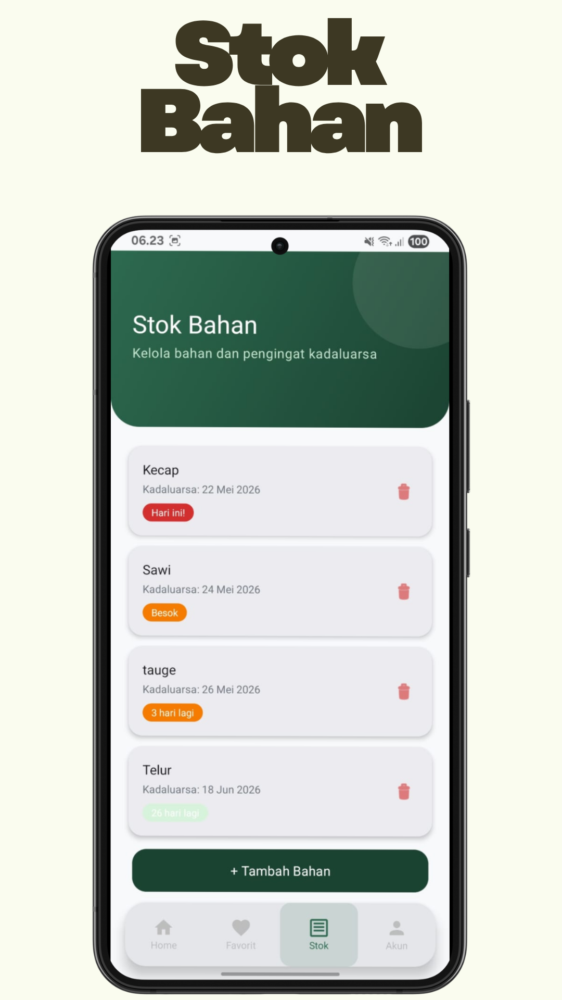
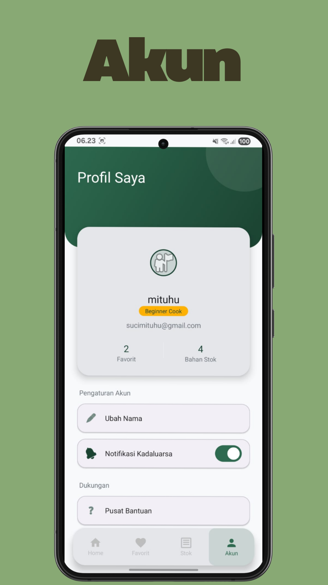

Masak Jadi Lebih Mudah dengan Bahan yang Ada di Rumah.
Aplikasi Android yang membantu kamu menemukan resep terbaik berdasarkan bahan-bahan yang sudah ada di rumah. Pilih bahan, lihat resep yang cocok, dan mulai masak — semua dalam genggaman.










Pilih bahan yang ada, lihat resep dengan persentase kesesuaian otomatis urut dari terbaik.
Catat stok bahan beserta tanggal kadaluarsa, terima notifikasi sebelum bahan terbuang.
Tandai resep favorit dan akses kembali kapan saja tanpa harus mencari ulang.
Kelola bahan di kulkas dan dapur, tambah dan hapus dengan tampilan yang intuitif.
Tambahkan bahan secara manual jika tidak tersedia di daftar bawaan aplikasi.
Setiap resep dilengkapi daftar bahan dan instruksi langkah demi langkah yang jelas.
Centang bahan yang ada di rumah atau tambahkan secara manual.
Resep muncul otomatis, diurutkan berdasarkan persentase kecocokan tertinggi.
Ikuti panduan langkah demi langkah dan sajikan hidangan dari bahan yang ada.
Dapur Sisa adalah aplikasi mobile yang membantu pengguna menemukan resep masakan berdasarkan bahan makanan yang tersedia di rumah. Aplikasi ini dirancang untuk memudahkan pengguna dalam mengolah bahan yang tersisa menjadi hidangan yang lezat tanpa harus membeli bahan tambahan yang tidak diperlukan.
Melalui fitur pencarian resep berbasis bahan, pengguna dapat memilih atau memasukkan bahan makanan yang dimiliki, kemudian aplikasi akan menampilkan berbagai rekomendasi resep yang sesuai. Selain itu, pengguna dapat melihat detail resep, langkah-langkah memasak, daftar bahan, serta menyimpan resep favorit untuk digunakan kembali di kemudian hari.
Dapur Sisa hadir sebagai solusi untuk mengurangi pemborosan makanan (food waste) yang masih menjadi masalah di banyak rumah tangga. Dengan memanfaatkan bahan yang tersedia secara optimal, pengguna dapat menghemat pengeluaran belanja sekaligus mendukung gaya hidup yang lebih ramah lingkungan dan berkelanjutan.
Dengan antarmuka yang sederhana, modern, dan mudah digunakan, Dapur Sisa cocok digunakan oleh mahasiswa, pekerja, ibu rumah tangga, maupun siapa saja yang ingin memasak secara lebih praktis dan efisien. Melalui aplikasi ini, setiap bahan makanan memiliki kesempatan untuk dimanfaatkan menjadi hidangan yang bermanfaat dan bernilai.
Langsung install di perangkat Android.
Aktifkan "Instalasi dari sumber tidak dikenal" di Pengaturan › Keamanan
Terakhir diperbarui: 23 Mei 2025
Dapur Sisa berkomitmen melindungi privasi pengguna. Dokumen ini menjelaskan cara kami mengelola informasi Anda.
Seluruh data tersimpan secara lokal di perangkat menggunakan Room Database dan SharedPreferences. Tidak ada pengiriman data ke server eksternal.
Data hanya berada di perangkat lokal dan tidak dapat diakses pihak ketiga.
Pembaruan kebijakan akan disampaikan melalui pembaruan aplikasi.
Pertanyaan dapat dikirim ke dapursisa@gmail.com